Using DeltaV Predict
DeltaV Predict allows you to create and automatically commission multivariable control strategies. After downloading a module that contains an MPC function block, the Predict application allows you to automatically test the process. The historical data collected on the process response during testing may be viewed using the Predict application. Also, the data collected for a module containing a block is used by this application to create a step response model of the process. Based on the identified process model, the Predict application automatically defines the control for the MPC function block. Also, you can launch the MPC Operator Interface from the Predict application. This section examines the features of DeltaV Predict.
Creating an MPC Module
Applying DeltaV Predict to the control of a process unit begins with the creation of a control strategy that utilizes the MPC function block. You can use the MPC function block to address multivariable control that traditionally was addressed using PID with feedforward, override, and decoupling control techniques. Also, because of MPC's ability to handle processes with difficult dynamics (for example, long deadtime), in some cases, you can use MPC to replace a single PID controller. In addition, you can use the capability of the MPC function block to maximize the throughput of a unit that is limiting production.
In DeltaV Control Studio, you can configure the inputs and outputs of the MPC function block to meet your particular control application. Three types of inputs to the function block can be defined:
- Control (CNTRL) - Process output measurement that is to be maintained at a specific setpoint value through the control action of the MPC function block.
- Disturbance (DSTRB) - Process input measurement that impacts one of the control parameters of the MPC function block.
- Constraint (CNSTR) - Process output measurement that is to be maintained within constraint limits through the control action of the MPC function block.
The Manipulated (MNPLT) parameters of the MPC function block can be wired to process inputs. These inputs are set using either the Analog Output (AO) function block or another control block (for example, a PID function block). The setpoint of these blocks is adjusted to maintain the MPC control parameters at target and the constraint parameters within their associated limits. You can assign a custom name to these inputs and outputs for display in the Predict application and the MPC operator view dynamo. An example of an MPC function block and typical input/output connections are shown in the following figure.
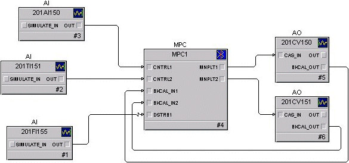
Commissioning MPC
After downloading an MPC function block to a DeltaV controller, verify that the transmitters and valves that provide the inputs and utilize the outputs of the MPC function block are working correctly. Also, make sure the Continuous Historian is enabled and the area containing the module has been assigned to the Continuous Historian. Once you have verified all I/Os to the MPC function block, you can use the Predict application to commission the MPC control. You can select the Predict application by right-clicking the MPC function block when the module is online. In response, the Predict application is launched and the following interface appears.
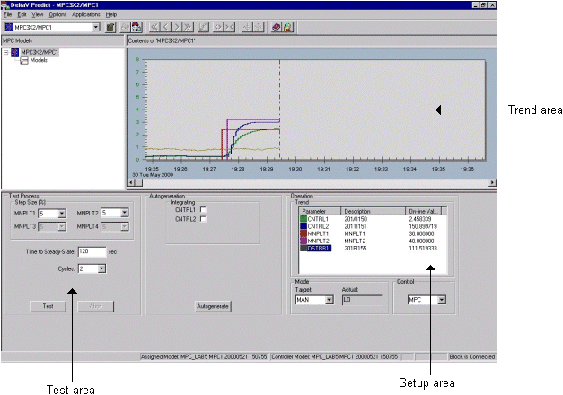
The control (CNTRL) parameters are trended automatically. Up to six of the MPC inputs and outputs can be trended at one time. For good data values, trends appear in the colors indicated in the parameter data area. The color varies to indicate questionable status (yellow for uncertain or limited values, red for bad values). To add or delete a parameter from the trend, double-click the parameter in the Operation Trend pane. When you right-click a selected parameter, options are provided that allow you to modify the trend view (that is, change the trend range). You can use the toolbar controls or the slider bar to adjust the time window that is shown on the trend.
The process dynamics may be determined by the Predict application using an automated testing feature. Before such testing can be done, the blocks wired to the manipulated outputs of the MPC block must be in the correct mode. By selecting the MPC button in the Control pane, you can force all the downstream blocks to the right mode. After doing this, note that the actual mode of the MPC function block changes from IMAN to MAN.
The size of the change made in the manipulated parameters during testing is determined by the step size entry (in percent of scale) where 0 indicates no change should be made. Enter the longest time (in seconds) that it takes for the process to respond to changes in inputs as the Time to Steady State. With the downstream blocks in their remote mode and the Time to Steady State specified, select Test to initiate automatic testing of the process. In response, the manipulated parameters will automatically change in a pseudo-random manner over a time approximately equal to six times the time to steady state.
If any process output exhibits integrating response, use the following guidelines to estimate the Time to Steady State (Tss) value:
- For integrating responses with insignificant lag and/or processes where the non-integrating response is significantly slower than integrating, limit the Tss to the approximate time it takes for the integrating process variable to reach one half of its operational limit value(s), when a normal change is applied to the process input.
- For processes with significant lag, the recommended Tss is 120 * approximate lag, provided the limiting condition of guideline 1 is not violated.
- If the identified response is still not satisfactory or the slow dynamics of non-integrating responses necessitate violating guideline 1, estimate the response based on the physical (for example, volume of a tank) and operational process parameters (for example, flow rates, low/high tank level limits, and so on). Then enter the response parameters (Gain per second, dead time, and first order lag, if any) in the corresponding fields of the Step Response Design dialog.
Whenever feasible, change disturbance variables manually during testing with a variable period (approximately Tss) squarewave.
While testing is active, the actual mode of the MPC function block changes to LO. During testing, a manipulated parameter can be changed using the Operation Trend pane. The portion of testing that is complete is indicated by a progression bar. The estimated time remaining to complete the test is shown below the progression bar.
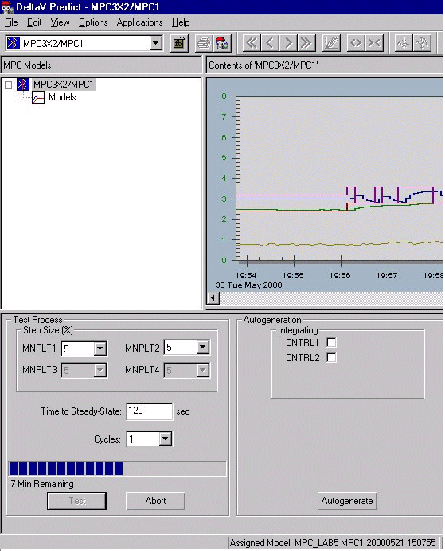
Upon completion of the test, a green area automatically covers portions of the trend associated with the time that testing was active. You can adjust the time covered by the green area either by dragging the start and end divider bars or positioning the bars by right-clicking the chart.
The area of test data that reflects normal process operating conditions is indicated by dragging the green area over the data on the trend window. You can exclude data within the green bar that does not represent normal operation by right-clicking within that area and stretching the resulting red bar over the bad data. After you select the test data, indicate if the control or constraint parameters are integrating, and then select Autogenerate to create a step response model for the process and the associated control.
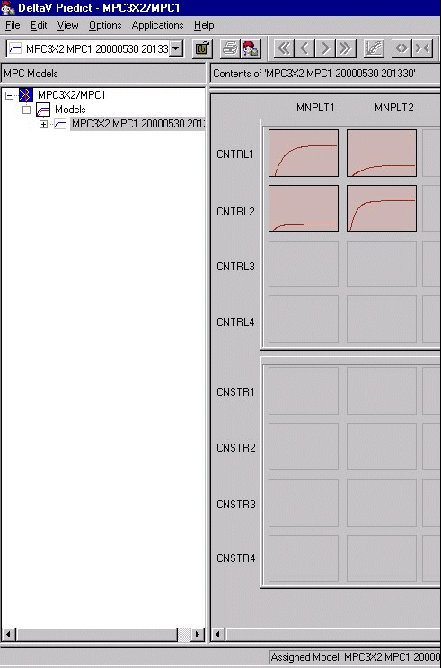
Any disturbances included in the control should be closely examined. The associated step response might be inaccurate if an input did not change significantly in the data used for autogenerate. If this occurs, a warning message will be displayed when the model is generated. In addition, this will be indicated in some cases by the step response that is shown as a straight line (that is, no response). One means of determining if the step response is accurate is to compare the ARX model to the FIR response. This can be done by identifying yourself as an expert by selecting , and then selecting the FIR check box. Both responses will be displayed, as shown in the following figure.
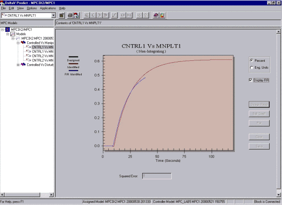
In some cases, the ARX and FIR responses might not agree. In such a case, you might need to use other data that includes times when the input changed. Then, you will need to regenerate the model and the controller. Alternatively, if you are familiar with the process dynamics, you can identify yourself as an expert by selecting , and then modify the step response to reflect your knowledge of the process.
There are three methods you can use to modify the step response. The first method entails selecting the step response to be modified, right-clicking the response area, and then adding points. Click the new points that define the desired step response, as shown in the following figure. Click Plot to display the new step response. Select Save to save the new step response.
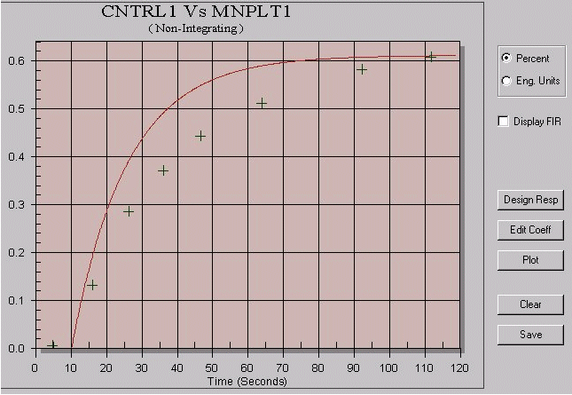
If you are familiar with the process delay and time constants associated with inputs, you can use the second method of modifying the step response. For this method, enter the response directly by selecting Design Response (as shown in the following figure), and then select u when you are finished to save the new step response.
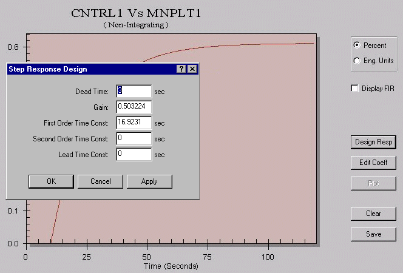
Also, by selecting Edit Coefficients, you can change individual points in the step response. Select Save when you are finished to save the new step response.
Make sure that you clean up any residual step responses with gains that are ten times smaller than the highest gains with irregular shapes.
Once you have modified the step response, you can examine the accuracy of the model by selecting Verify from the model overview. In response, you can examine the calculated output based on the model (as opposed to the actual process output) either for the time frame defined by the green area of the trend plot or for the original data used in generating the model. In response, you can examine the actual process output in direct comparison (as opposed to the output based on the calculated model) either for the time frame defined by the green area of the trend plot or for the original data used in generating the model. You can also examine the XY plot of the actual process output against the calculated output and the corresponding best fit line. In addition, you can use statistics that are provided to indicate how closely the model matches the plant data. The Model Verification window is shown in the following figure.
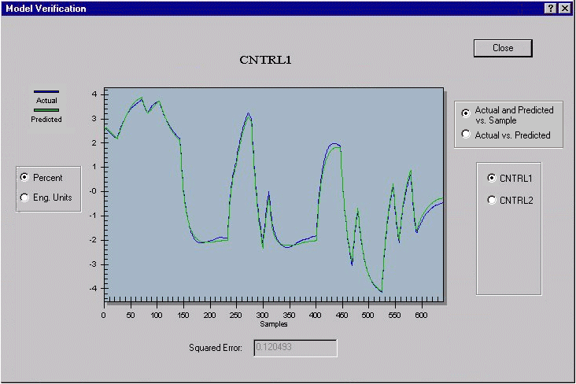
Once you are satisfied that the model accurately reflects the process dynamics, select Generate Control to update the MPC configuration for the new model. When the control is generated from a selected model, control parameters used to generate the control are displayed.
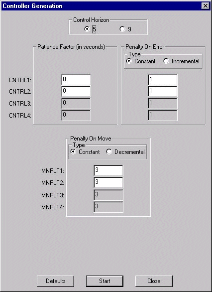
In most cases, it is recommended that you leave the control generation parameters at their default values and select Start (in the Controller Generation dialog) to generate the control. If you have expert MPC knowledge, you can change the default values to address special requirements. For example, you can increase the Penalty on Move to make the control more robust. Decreasing the Penalty on Move makes the controller more responsive. Doing so may also be advantageous for unmeasured disturbance compensation. Setting the Penalty on Move to less than the default value would require you to take extra precaution when commissioning. Decreasing the PM might be necessary if the controller is primarily intended for disturbance compensation. To get the proper speed of response, you may need to set the PM to ten times less than the default values. This may cause oscillatory control for some CVs. If an oscillatory CV does not require tight control, decreasing the Penalty on Error for that CV should alleviate the problem. If not, you must increase the PM until stability is achieved.
Qualitatively, increasing the PE decreases the sum of error-squared for the associated CV; increasing the PM decreases the sum of the square of MV moves. Generally, increasing the PE decreases the stability margin, and increasing the PM increases the stability margin. The specific effect achieved is very much dependent on the step responses of the process; so, caution must be exercised. If the objective is tight regulation or load response for a particular CV, and the PE on another CV, which is affected by MVs that affect the target CV, is decreased, then the stability margin for both CVs will increase. The additional margin makes it possible to decrease the PM on one or more MVs that affect the target CV, thereby improving its control response. The relationship of the PE to CVs can be viewed as a relative weighing of error significance. Since error is evaluated on the basis of percent of span, the same PE value can have different meanings, depending on the span of the CV. For example, the PE applied to a pressure with a span 600 psi differs in units of psi than the same PE applied to a pressure with a span of 300 psi.
For the new control definition to be used after completing control generation, you must download the associated module. All MPC parameters have assigned defaults. You can verify and refine the MPC configuration and control generation during simulation. During online operation of the MPC function block in Control Studio, you can adjust only those parameters of the block that do not impact the controller. Also, you can only change parameters that are used during Control Studio controller generation in offline mode. Any changes in these parameters require that you regenerate the controller in order for the changes to be used in the MPC control.
Defining an MPC Operator Interface
You can create an operator interface for the MPC function block using the frsAdvCFncblk dynamo set in DeltaV Operate in configure mode.
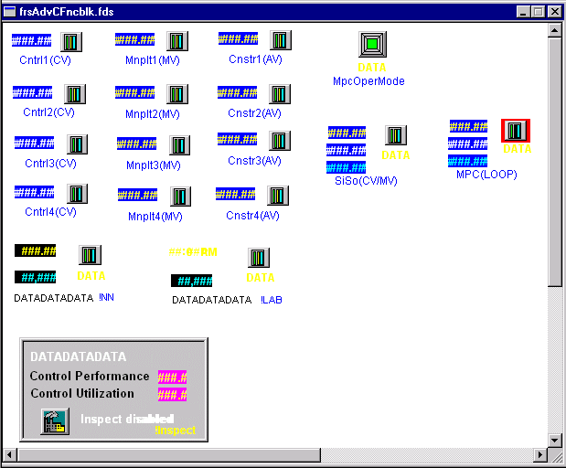
Place the dynamo provided for each control, constraint, and manipulated parameter adjacent to the associated I/O or control block on the process graphic. These dynamos provide additional information on the MPC target or limit values, as shown in the following figure.
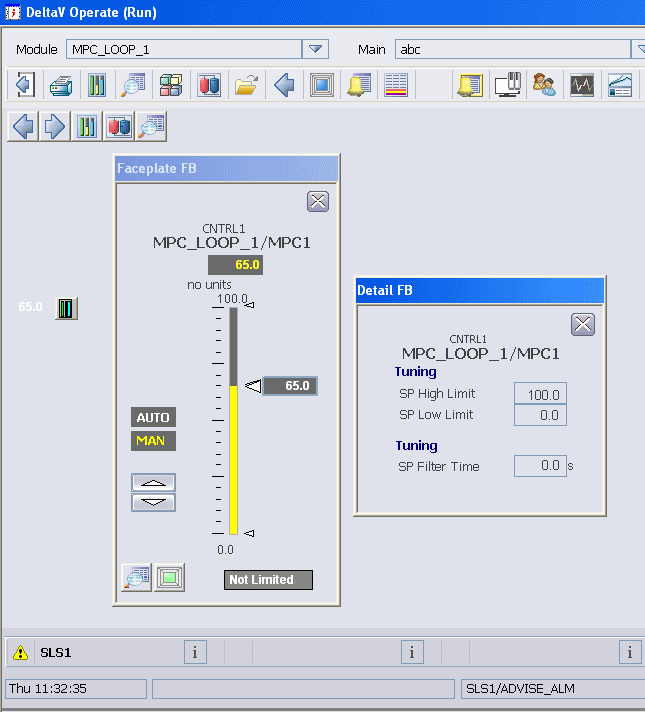
Place the MPC_Oper dynamo on the primary graphic display of the process that is controlled by MPC. When you access this dynamo (or the one on the faceplate), a predefined view of MPC control is provided that you can use to make setpoint and mode changes associated with the MPC function block. An example of this display is shown in the following figure.
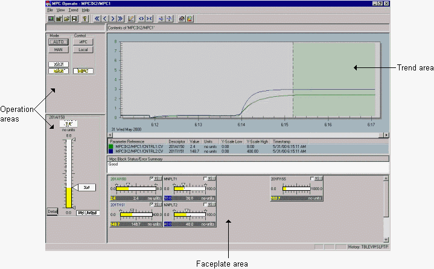
MPC Simulate
MPC Simulate allows you to run the MPC function block locally without having to download the controller. A simulation of the process is provided based on the process model that was identified using DeltaV Predict. You can simulate control as well as the process response to changes made by the Predict control. Using MPC Simulate's special interface, you can interact with the control just as you would during an actual process. You can add noise and unmeasured load disturbances to the process inputs. MPC Simulate also allows you to evaluate the control performance of the MPC function block for different plant operating conditions. In addition, you can perform an expedient test on the control without disturbing actual plant operations. In this way, MPC Simulate can also serve as an operator training tool.
The prerequisites for running MPC Simulate are as follows:
- The module that contains an MPC function block to be simulated exists in the persistent database (that is, the model and the MPC controller have been generated).
- DeltaV Predict is open on the module of interest.
- You have generated a process model using the Predict application and the block of interest.
To access MPC Simulate, you must use the Options menu, and then identify yourself as an expert. Then, either select the process model that you want to use for the process simulation from the models that have been generated and click the Simulate button located at the bottom of the screen or select the process model in the hierarchy tree, right-click, and select Simulate. Refer to the following figure.
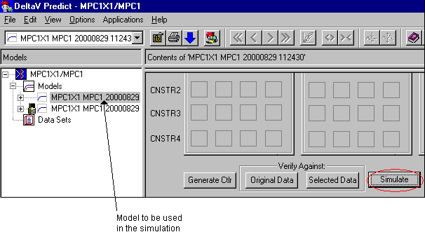
The following window appears.
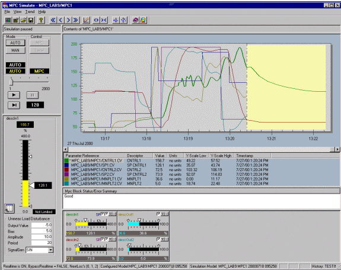
MPC Simulate functions similarly to MPC Operate. However, MPC Simulate also allows you to perform the following functions to support simulation:
- Execution of the process and control simulation in speeds that are either faster or slower than real time. This allows you to evaluate the performance of a process that is slow in response.
- Introduction of disturbances that will be added to the process output or disturbance input used in the simulation. You can evaluate the impact of noise and unmeasured load disturbances on the process control and change the value of measured load disturbances inputs.
All values and ranges are based on your MPC function block's configuration. MPC Simulate shows the names of both the configured model and the simulation model. The trend area continually updates (that is, it defaults to Continuous mode upon launching). The future area comprises one third of the graph, and it is yellow to distinguish it from that of MPC Operate, which is green. Initially, the time scale on the chart is based on the time when you launched MPC Simulate. As you change the real-time execution multiplier, the time change reflects that multiplier. You can change the setpoint and manipulate variable. Also, the effects on predicted control and constraint variables are shown in the trend and the faceplates. You can either select and change the real-time execution multiplier to be used in the Continuous mode or you can select the Step mode (by clicking the Advance button). Refer to the following figure.
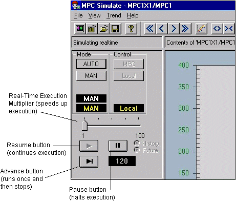
When using the real-time execution multiplier, select the Pause button to freeze the display of the multiplier change temporarily. Select the Resume button to continue updates. When using the Step mode (by clicking the Advance button), the trend is a snapshot, and the MPC function block execution is only performed on request. You can also change from Step mode back to Continuous mode by clicking the Resume button.
To force a disturbance on a process output or disturbance input, select the parameter to which the disturbance is to be added. The faceplate for this parameter is displayed in the left pane of the MPC Simulate interface. Use the selections provided in the bottom half of this faceplate to specify the disturbance to be introduced, as shown in the following figure.
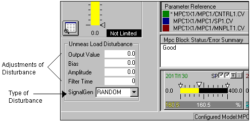
Once you have finished using MPC Simulate, you can save the file you created for future reference. Doing so saves not only the trend selection and the Y-scale. It also saves all user-adjusted values for signal amplitude, the bias, and the period for the next simulation run on the same module. For this module, you can select a new model to be used in simulation. When you do so, if you previously saved this setup information, it can be used with the new model. In addition, the previously used setup data becomes the default.
MPC Process Simulate
After you have generated the MPC control, you can provide operator training on MPC by creating a module that contains the MPC function block and an MPC Process Simulator block, as shown in the following figure.
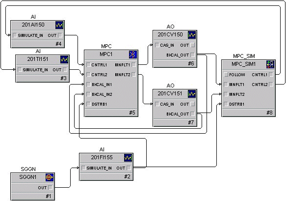
You can assign a process model to the MPC Process Simulator block by right-clicking the block in DeltaV Control Studio, and then selecting Predict. This launches the Predict application, from which you can assign a model to the MPC Process Simulator function block. To assign a model, select . In response, the models that were previously created are displayed. The model that you select must have the same number and types of inputs and outputs as the MPC Process Simulator function block. After assigning a model, you must download the module for the assigned model to be used.